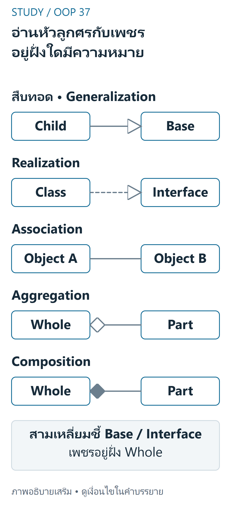
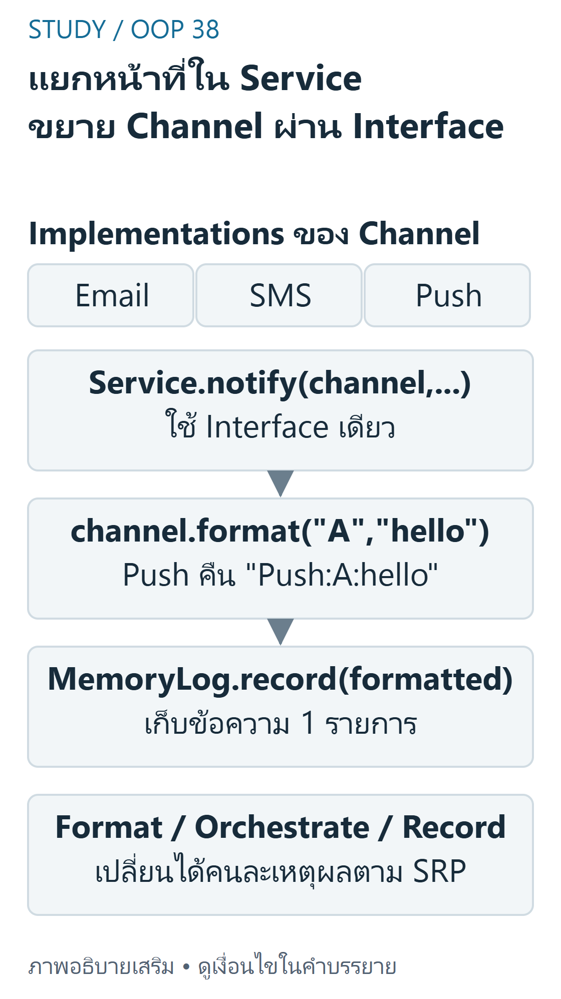

UML และหลักออกแบบ SRP, OCP, LSP
Week6 และ Week7 pp.3–23 เป็นชุดแนวคิดออกแบบต่อเนื่องจึงรวมเป็นบทเดียว ไม่สร้าง chapter ปลอมตามจำนวนสัปดาห์ ตัวอย่าง notification เป็น simulation ที่คืนข้อความ/เขียน memory เท่านั้น ไม่ส่งอีเมลหรือเขียนไฟล์จริง
เป้าหมายการเรียนรู้
- อ่าน UML class box/visibility/relationship/multiplicity แล้วเชื่อมกับ Python
- แยก SRP,OCP,LSP ด้วยเหตุผลของการเปลี่ยนและ contract จริง
- trace การเพิ่ม channel ใหม่โดยไม่เพิ่ม type branch และสร้าง counterexample ของ hierarchy ที่ผิด
อ่าน UML อย่างเป็นขั้นตอน
Week6 pp.10–26:ดูชื่อ class→attributes/types→operations→visibility→เส้นสัมพันธ์→multiplicity +public,-private,#protected เป็น notation ออกแบบ;Pythonunderscore/mangling ไม่ได้ enforce แบบ Java ทุกอย่าง abstractclass/operation ใช้ตัวเอียงหรือ annotation ให้เข้าใจว่าเป็น contract

อ่านภาพ: Generalizationใช้เส้นทึบหัวสามเหลี่ยมโปร่งชี้Base Realizationใช้เส้นประหัวสามเหลี่ยมโปร่งชี้Interface Associationเป็นเส้นทั่วไป Aggregationมีเพชรโปร่งและCompositionมีเพชรทึบที่Whole ไม่ได้สร้างruntime validationหรือบังคับPythonlifetimeเอง
แผนภาพตัวอักษรต่อไปนี้ผู้เขียนสร้างใหม่จากตัวอย่าง source ไม่ใช่รูป UML ต้นฉบับ:
NotificationService
+ notify(channel, recipient, message)
uses Channel (format)
uses MemoryLog (record)
Channel <|-- Email / SMS / Push (implements interface)ตาราง p.26 มี 5 แบบ worked:inheritance ลูกศรหัวสามเหลี่ยมโปร่งชี้ฐาน,realization เส้นประหัวสามเหลี่ยมชี้ interface,association เส้นทั่วไป,aggregation เพชรโปร่งฝั่ง whole,composition เพชรทึบฝั่ง whole หัวข้อ p.19 เรียก 6 ระดับแต่ไม่แสดง worked ตัวที่หกครบ จึงไม่แต่งว่า source สอนตัวอย่าง dependency เพิ่มเติม การวาดสัญลักษณ์ไม่ทำให้ code มี validation/multiplicity เอง
SRP: หนึ่งเหตุผลของการเปลี่ยน
Week6 pp.28–35 แยก Report การคำนวณ,Formatter รูปแบบ,Repository การเก็บ,Notifier การแจ้งเตือน เพราะ requirements เหล่านี้เปลี่ยนคนละเหตุผล
SRP ไม่ใช่มี method เดียวต่อ class และไม่ควรแยก count/total/average เป็นสาม class โดยไม่มีเหตุผลต่างกัน การแยกมากเกินไปเพิ่ม coupling/ความซับซ้อนแทน
OCP: เปิดให้ขยายผ่านจุดที่ออกแบบไว้
pp.37–43 และ Week7 pp.14–23:ถ้าต้องเพิ่ม output/channel ใหม่แล้วกลับไปแก้ ifemail/sms/...ทุกครั้ง อาจแยก interface ให้เพิ่ม implementation ใหม่ โดย client ไม่ต้องรู้ชนิด OCP ไม่ใช่ห้ามแก้โค้ดใดตลอดกาล:การแก้ bug หรือเปลี่ยนสัญญาฐานยังทำได้หลังประเมินผลกระทบ จุด compositionroot ที่เลือก channel ย่อมต้องรับ configuration ใหม่

อ่านภาพ: NotificationServiceใช้Channel.formatสร้างข้อความแล้วส่งMemoryLog.record ผู้เขียนจำลองในmemoryไม่ส่งemailจริง เพิ่มPushที่ทำformatตามinterfaceแล้วใช้notifyเดิมได้ แต่จุดcompositionเลือกChannelใหม่ยังต้องปรับ ไม่อ้างว่าOCPห้ามแก้bugทุกกรณี
LSP: ทดแทนแล้วรักษา Contract
Week7 pp.3–13:การสืบทอดที่ถูก syntax ยังละเมิดความคาดหวัง client ได้ Square ทางคณิตศาสตร์เป็น rectangle แต่ mutableRectangle ที่ width/height แก้แยกกันมี contract ต่างจาก Square ที่ผูกสองค่า วิธีแก้คือแยกชนิดผ่าน Shape ร่วมและไม่ให้ Square รับสัญญา set อิสระที่ทำไม่ได้ เช่นเดียวกับ Bird ที่ไม่ควรรับรอง fly ถ้ามี Penguin ที่บินไม่ได้
ISP/DIP ปรากฏในภาพรวม SOLID แต่ source ช่วงนี้ไม่ได้มีหน่วยสอนเต็มเท่า SRP/OCP/LSP บทนี้ไม่เพิ่มคำกล่าวว่าครอบคลุมทุกหลักอย่างละเอียด
Python และ Counterexample ที่ตั้งใจให้เห็นข้อผิดพลาด
โค้ด Channel อิงแนว NotificationService แต่ใช้ format/MemoryLog เพื่อตรวจโดยไม่เกิด externalactions ส่วน CoupledSquare เป็นตัวอย่าง ผิด contract โดยเจตนา ไม่ใช่แบบนำไปใช้จริง
from abc import ABC, abstractmethodclass Channel(ABC): @abstractmethod def format(self, recipient, message): passclass Email(Channel): def format(self, recipient, message): return f"Email:{recipient}:{message}"class SMS(Channel): def format(self, recipient, message): return f"SMS:{recipient}:{message[:160]}"class Push(Channel): def format(self, recipient, message): return f"Push:{recipient}:{message}"class MemoryLog: def __init__(self): self.entries = [] def record(self, event): self.entries.append(event)class NotificationService: def __init__(self, logger): self.logger = logger def notify(self, channel, recipient, message): formatted = channel.format(recipient, message) self.logger.record(formatted) return formatted # NO network/email/file write; teaching simulation onlyclass Rectangle: def __init__(self, width, height): self.width, self.height = width, height @property def area(self): return self.width*self.heightclass CoupledSquare(Rectangle): # Deliberately wrong substitution contract: changing width changes height. def __init__(self, side): self._side = side @property def width(self): return self._side @width.setter def width(self, value): self._side = value @property def height(self): return self._side @height.setter def height(self, value): self._side = valuedef client_area(r): r.width, r.height = 5, 4 return r.arealog = MemoryLog()service = NotificationService(log)print(service.notify(Push(), "A", "hello")) # Push:A:helloprint(len(log.entries)) # 1print(client_area(Rectangle(2, 3))) # 20print(client_area(CoupledSquare(2))) # 16: contract violation demonstratedTrace และการเลือกความรับผิดชอบ
Push.format("A","hello") คืน Push:A:hello→service ส่งค่าเดียวให้ logger→entries มี 1 รายการ เพิ่ม Email/SMS โดยใช้ service เดิมได้ ไม่มี ifbranch ตามชื่อชนิด ข้อมูลไม่ถูกส่งออกเครือข่าย
client_area ตั้ง width5 แล้ว height4:Rectangle ได้ 20;CoupledSquare เก็บ side ตัวเดียว จึงหลังสองคำสั่ง side4 และ area16 ไม่ใช่ 20 Counterexample หนึ่งที่ทำลาย contract ก็พอชี้ LSP violation ไม่ใช้ isinstance มาปิดบังหรือแก้ client ให้รู้ทุก child
ต้นทุนและข้อผิดพลาด
การจัดรูปข้อความ m ตัวอักษรใช้ O(m);เพิ่ม loglistamortizedO(1) ไม่นับข้อความ;เก็บ k ข้อความใช้พื้นที่ตามความยาวรวม การแบ่ง class ไม่ลด Big-O โดยอัตโนมัติและมี indirection/objects เพิ่มบ้าง ห้ามอ้าง refactor ประหยัด memory หรือเร็วขึ้นโดยไม่มี measurement
ข้อผิดพลาดคือดู UML แล้วเลือก inheritance จากคำว่า has-a,สร้าง GodClass หรือแตก class เกินเหตุ,ถือ OCP เป็นคำสั่งห้ามแก้ bug และเชื่อ LSP ตรวจได้แค่ชื่อ method/ชนิดผลลัพธ์โดยไม่สนใจ invariants/exceptions
แบบฝึกพร้อมเฉลย (ผู้เขียนจัดทำและตรวจอิสระ)
ข้อ1 เหตุผลของการเปลี่ยน
เฉลย: Report สูตรรวมกับ CSVformat กับการบันทึกไฟล์อาจเปลี่ยนคนละเหตุผล จึงแยกตาม SRP;มีสาม method ที่คำนวณข้อมูลชุดเดียวกันไม่ได้แปลว่าผิด SRP เสมอ
ข้อ2 เพิ่ม Push โดยไม่แก้ service
เฉลย: สร้าง Push ที่ format ตาม Channelcontract แล้วส่งให้ notify จุด clientcomposition เลือก Push ใหม่ได้ แต่ notify ไม่ต้องเพิ่ม if ชนิด ผล Push:A:hello ถูกบันทึกหนึ่งครั้ง
ข้อ3 พิสูจน์ LSPviolation
เฉลย: client ตั้ง width5,height4คาด area20 Rectangle ให้20 Square ผูก side ให้4จึง16 ถือผิด observablecontract แม้ isinstanceSquareRectangle เป็น True
ข้อ4 เลือกสัญลักษณ์
เฉลย: Team/Player ตามกฎ part อิสระใช้ aggregation เพชรโปร่งที่ Team;Order/OrderLine ที่เจ้าของสร้างจัดการใช้ composition เพชรทึบที่ Order;ลูกศร inheritance ชี้ฐานไม่ชี้ child
ข้อ5 OCP และความซับซ้อน
เฉลย: แก้ bugformatter ได้ ไม่ใช่ละเมิด OCP โดยอัตโนมัติ;เพิ่ม class ไม่ได้ทำให้การ format ข้อความยาว m จาก O(m)เป็น O(1) ต้องวิเคราะห์งานจริงและสัญญาที่ต้องรักษา
สรุปทบทวน
UML สื่อสัญญาไม่ใช่ runtime enforcement;SRP แยกเหตุผลเปลี่ยน;OCP เตรียม extension point;LSP ทดแทนต้องรักษา behavior ไม่ใช่เพียง syntax/source graph
แหล่งอ้างอิงและขอบเขต
- Week6 physical pp.3–47 — UML,relationships,SRP/OCP และ overview
- Week7 physical pp.3–23 — LSP,Square/Rectangle,Bird,NotificationService
- แหล่ง lab เพิ่มเติม (local-only ไม่เผยแพร่ไฟล์งานส่ง): Lab6-1 QueueAlertSystem,Lab6-2 AbsenceNotifier;absenceNotifier.py แยก channel กับ logger ตาม interface โค้ดต้นฉบับไม่ถูกเรียกให้ส่งข้อความ/เขียนไฟล์
- แผนผังแหล่งสอน. คำอธิบาย/โค้ดที่ปรับให้รันเดี่ยวและเฉลยในบทเป็นงานผู้เขียน ไม่ใช่เฉลยข้อสอบทางการ ไม่มี prerequisite gating; เลือกบทจากแคตตาล็อกได้โดยตรง